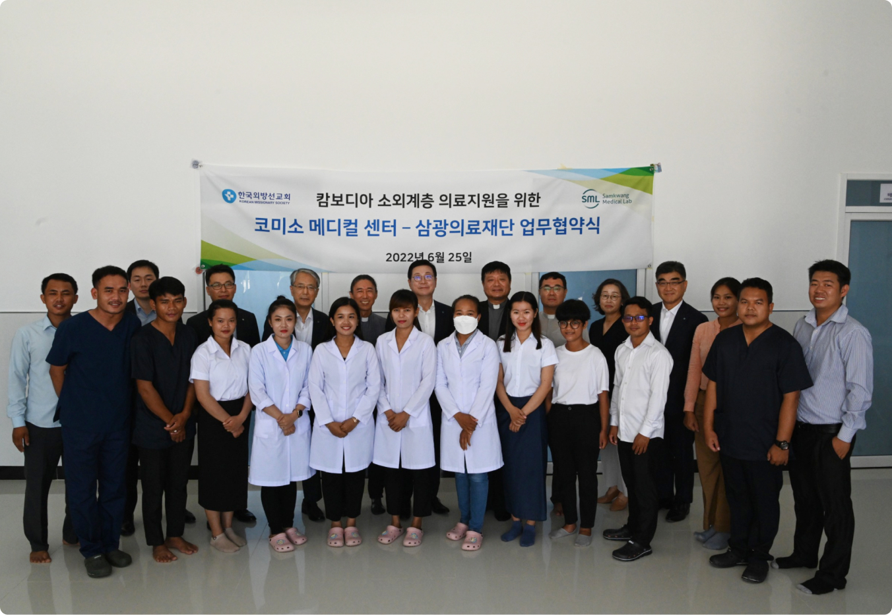

캄보디아 소외계층 의료지원을 위한 코미소 메디컬 센터 건립 후원
2023.12.12 999
삼광의료재단, 캄보디아 코미소메디컬센터와 MOU 체결
- 최대 69종의 암/질병에 대한 유전자 변이 여부를 확인하여 발병 위험도를 예측
- 향후 응용 AI 기반한 검사서비스 확대 예정

삼광의료재단(이사장 황태국)과 캄보디아 코미소메디컬센터(센터장 김지훈 신부)가 지난달 25일 코미소메디컬센터에서 업무협약을 체결했다고 밝혔다.
이번 협약은 삼광의료재단과 코미소메디컬센터의 캄보디아 현지 의료소외계층의 의료지원과 건강증진을 위해 상호 긴밀한 업무 협력이 필요함을 깊이 인식하고, 상호 협력 사항에 대해 규정하는 것을
목적으로 추진됐다.
삼광의료재단과 코미소메디컬센터는 △현지 의료소외계층 대상 진료소 활동 지속 후원 및 교류 △양 기관 목적에 부합하는 공익사업 공동 추진 △정보의 공유 및 양 기관 보유 자원 상호이용 지원 △기타
상호 협의에 따른 사항으로 상호 발전적 관계를 지속해 나갈 예정이다.
황태국 삼광의료재단 이사장은 “삼광의료재단과 코미소메디컬센터가 의료지원·건강증진을 위한 업무협약을 체결하게 되어 기쁘게 생각한다”며 “업무 협약을 기반으로 앞으로도 후원및 현지의료봉사 등 다양한
방식을 통해 지속적으로 진료소 활동을 지원하고 캄보디아 사회의 의료소외계층에게 많은 혜택이 전파될 수 있도록 공헌하는데 노력하겠다”라고 말했다.
한편 코미소메디컬센터(KOMISO Clinic)는 국제 봉사 및 선교를 목적으로 하는 한국외방선교회(KOREAN MISSIONARY SOCIETY)가 운영하는 무료 진료소로 캄보디아 현지의
열악한 의료 사정 속에서 가난한 사람들을 위한 무료 진료를 제공해 왔다. 특히 올해 초 프놈펜 외곽으로 신축 확장이전을 완료하고 각종 의료시설 및 숙박시설 등을 대규모로 확충하였으며,
삼광의료재단이 제반 비용을 후원했다.